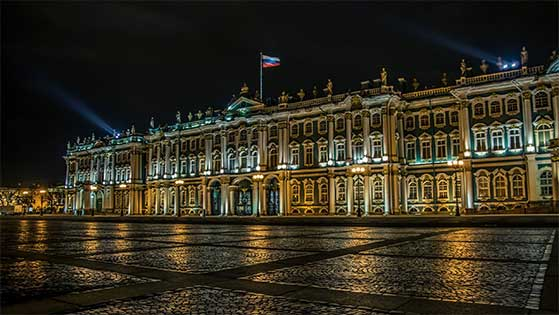

About st petersburg
Saint Petersburg, the second largest city in Russia and one of the most beautiful cities in the world, was founded in 1703 by Peter the Great. Peter wanted this city to become a “window to Europe”. In 1712 Saint Petersburg became the capital of the Russian Empire and within the next fifty years turned into a city of great beauty, with magnificent palaces, cathedrals, churches and government buildings. Famous architects brought from Italy and France design and built many historical monuments like the Winter Palace, the residence the Russian czars, which is currently the home of the world-famous Hermitage museum.

Because of its magnificence St Petersburg is often called the Palmira of the North and because of many rivers and canals which crisscross the city (65 in total) it is also called the Northern Venice. There are many large and small beautiful bridges in St Petersburg. Eight bridges across the Neva River are raised every night to let big ships pass through. The longest bridge is the Alexander Nevsky Bridge across the Neva River. The Blue Bridge over the Moika River is the widest and completes the ensemble of St. Isaac`s Square.
During the first 300 years of its history St Petersburg was renamed several times. When the First World War broke out in 1914, the German-sounding name Saint Petersburg was changed to the Russian equivalent - Petrograd. After the death of the Bolshevik dictator Vladimir Lenin in 1924, the city was called after him – Leningrad. Only in 1991, weeks before the disintegration of the Soviet Union, the city returned its original name of St Petersburg.
This days St Petersburg with it’s 5 mln population is an important economic, cultural and educational centre. The city boasts almost 100 universities, more than 400 scientific-research institutes encompassing 10% of Russia’s scientific potential. St Petersburg is a seat of Russia’s Constitutional Court and the Supreme Command of the Russian Fleet.
Saint Petersburg is a home to more than two hundred museums, many of them hosted in historic buildings. The largest and the most famous of them is the Hermitage Museum located in the Winter Palace and housing a preeminent collection of Ancient and Modern Art. The Russian Museum is a large museum devoted specifically to Russian fine art. The Kunstkamera, the first museum in Russia, is a place where various curiosities and natural artefacts collected either by Peter the Great or at his request can be seen. The apartments of some famous inhabitants of St Petersburg, including Alexander Pushkin, Fyodor Dostoyevsky, Nikolai Rimsky-Korsakov, Feodor Chaliapin, Alexander Blok, Vladimir Nabokov, Anna Akhmatova, Joseph Brodsky, as well as some palace and park ensembles of the southern suburbs and notable architectural monuments such as St. Isaac's Cathedral, have also been turned into public museums.
There are lots of theatres in St Petersburg to suit all tastes – the Mariinsky Theater or the Maly Opera House, the Tovstonogov Bolshoi Drama Theater, the Alexandrinsky Theater and many others.